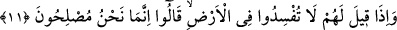

Bu sancağı, Arş, Kürsî, Halâ ve Melâ’ya yükseltmişlerdir,
Bunlar Hudâ’nın “sıdk” makamında bulunmaktadır.
Bunların ilimleri vâsıtasız Hak’tan gelmektedir.
Onların ilmi, berber gibi zâhir süsleyen ilme benzemez.
11. Onlara: Yeryüzünde fesat çıkarmayın, denildiği zaman, “Biz ancak ıslah
edicileriz” derler.
Müslümanlar münâfıklara, yeryüzünde bozgunculuk yapmamalarını söylediklerinde
onlar kendilerinin bozguncu olduklarını kabûl etmiyor ve böyle diyorlardı. Fesâd, bir
şeyin normal hâlinden çıkması demektir. Zıddı sulhdur. Fesâd zararın her türlüsünü, sulh
da faydanın her türlüsünü kapsar.
Yeryüzünde fesâd çıkarmak, harpleri kızıştırmak, kulların işlerindeki denge ve
istikameti bozmak için birbiri ardınca fitneler çıkarmaktır. Bunlar dünyâ ve âhıret
işlerini alt üst ettikleri için “fesâd” diye adlandırılmıştır. Münâfıkların nehyolundukları
fesâd, mü’minlerin sırlarını kâfirlere söylemek ve böylece kâfirleri mü’minlere karşı
kışkırtmak gibi şer yollardır. İşte münâfıkların yaptıkları bütün işler bozgunculuğa
sebebiyet veren şeyler olması sebebiyle onlara bozgunculuk yapmamaları emredilmiştir.
Nitekim, ölümüne sebeb olabilecek bir işle uğraşan kimseye “kendi elinle kendini
öldürme, kendini ateşe atma” denilir.
Peygamber Efendimiz (s.a.)’in gönderilişinden önce yeryüzünde kötülükler çoğalmış
ve son dereceye varmıştı. Hz. Peygamber (s.a.) gönderilince bozgunculuk ortadan kalktı
ve yeryüzü ıslah oldu. Münâfıklar yeryüzünün ıslâhından sonra açıkça kötülük işleyip
bozgunculuğa devam ettiler. Ebu’l-Leys Tefsîri’nde böyle kaydedilmiştir.
Münâfıklara, yeryüzünde bozgunculuk yapmamaları söylenince “Biz sâdece
düzelticileriz” derler. Bu, nasihat edene mübâlağalı bir tarzda verilmiş bir cevaptır.
Münâfıklar bu sözleriyle şunu ifâde etmek istiyorlar: Bize böyle hitâb etmeniz doğru
değildir. Zâten bizim yaptığımız ıslâhtan başka bir şey değildir. Bizim hâlimiz
bozgunculuğun bütün şüphelerinden uzak ve temizdir.
Onlar kalblerinde bulunan hastalık yüzünden bozgunculuğu ıslâh olarak tasavvur
ederek bu kanâata sâhib olmuşlardır. Nitekim Allah Teâlâ bu durumu şu şekilde îzâh
etmektedir: “Kötü işi kendisine süslendirilip de onu güzel gören kimse, vehmine
aldanmayarak kötü amelini güzel görmeyen, aklıyla gerçeği gören kimse gibi olur
mu?” (el-Fâtır, 35/8) İşte münâfıklar da yaptıklarının bozgunculuk olduğunu inkâr edip
ıslah ile meşgul bulunduklarını iddiâ etmişlerdir.
İbnu’t-Temcîd şöyle demiştir: Müslümanlar münâfıklara “bozgunculuk yapmayın”
dediklerinde, münâfıklar müslümanların bu sözleri ile onların bozgunculukla ıslâhı